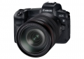

器材库 > 35mm画幅可换镜头数码相机 > EOS R

规格总览
产品类型
35mm画幅可换镜头数码相机
发布日期
2018-09-05
影像规格
影像传感器
CMOS
影像传感器尺寸
36×24mm
有效像素
3030万
影像处理器
DIGIC 8
静态图像格式
JPEG, RAW, RAW+JPEG
静态图像尺寸
L（大）：约3010万像素（6720×4480），M（中）：约1330万像素（4464×2976），S1（小1）：约750万像素（3360×2240），S2（小2）：约380万像素（2400×1600），RAW：约3010万像素（6720×4480），C-RAW：约3010万像素（6720×4480）
画幅比
3:2
短片格式
MPEG4-AVC/H.264
短片尺寸
4K（3840×2160）、全高清（1920×1080）、高清（1280×720），拍摄高帧频短片时：高清，使用RF/EF镜头拍摄HDR短片时：全高清，使用EF-S镜头、短片裁切时：高清，拍摄延时短片时：4K/全高清
音频格式
线性PCM / AAC
防抖系统
短片5轴防抖
除尘系统
EOS综合除尘系统
镜头和对焦
镜头卡口
Canon RF
兼容镜头
佳能RF系列镜头及EF系列镜头 ※通过安装卡口适配器，可支持EF/EF-S镜头（不支持EF-M，CN-E镜头）
对焦系统类型
全像素双核CMOS AF（Dual Pixel CMOS AF）相差检测方式
AF辅助灯/光
有
手动对焦
支持
曝光控制
测光系统
使用图像感应器的实时测光，384区（24×16）测光。
测光模式
评价测光, 点测光, 局部测光, 中央重点平均测光
拍摄模式
静止图像拍摄：场景智能自动、灵活优先自动曝光、程序自动曝光、快门优先自动曝光、光圈优先自动曝光、手动曝光、B门曝光、自定义拍摄模式；短片拍摄：场景智能自动、程序自动曝光、快门优先自动曝光、光圈优先自动曝光、手动曝光、自定义拍摄模式
快门类型
电子控制焦平面快门
快门速度
1/8000至30秒（总快门速度范围。可用范围随拍摄模式各异）、B门、闪光同步速度1/200秒
曝光补偿
±3EV以1/3或1/2EV级调整
自动曝光锁
有
ISO感光度
场景智能自动：在ISO 100～12800之间自动设置，Fv，P，Tv，Av，M，B：自动ISO、在ISO 100～40000范围内手动设置（以1/3级或整级为单位），可扩展到L（相当于ISO 50）、H1（相当于ISO 51200）、H2（相当于ISO 102400） ※启用高光色调优先时，手动设置的下限为ISO 200。
白平衡
自动（氛围优先)、自动（白色优先)、预设（日光、阴影、阴天、钨丝灯、白色荧光灯、闪光灯）、用户自定义、色温设置（约2500-10000K），具备白平衡校正和白平衡包围曝光功能 ※支持闪光色温信息传输
自拍
10秒、2秒
连拍
高速连拍：最高约8张/秒低速连拍：最高约3张/秒
闪光灯
外接闪光灯
EL/EX系列闪光灯
取景器/显示屏
取景器
有机EL彩色电子取景器
取景范围
100%
取景放大倍率
0.76倍
屈光度调节范围
约-4.0～+2.0m-1（dpt）
反光镜
无
LCD类型
彩色TFT LCD
LCD尺寸
3.15英寸
LCD像素
210万
视野率
100%
LCD特性
触摸屏, 翻转屏
亮度调节级数
7级
文件输入/输出
存储卡
SD/SDHC, SDXC
数据接口
高速USB
视频/音频接口
HDMI Mini 输出
无线功能
Wi-Fi, 蓝牙
电源
电池
电池LP-E6N或LP-E6（1块）
续航能力
静止图像拍摄：室温（23℃）约370张、低温（0℃）约350张短片拍摄：室温（23℃）合计约2小时20分钟，低温（0℃）合计约2小时10分钟
机身规格
颜色
黑色
尺寸
135.8×98.3×84.4mm
重量
仅机身约580g / 含电池和存储卡约660g
其它
配件端口
耳机, 脚架螺丝孔, 麦克风输入端子
工作温度
0 - 40℃
工作湿度
不高于85%
附件
电池充电器 LC-E6E（含电源线），锂电池 LP-E6N，USB接口连接线 IFC-100U（无抗干扰磁环），连接线保护器，相机宽背带
兰青2019-10-04 18:274.44 分
操作性 4.50功能性 4.50美观性 4.50趣味性 4.50耐用性 4.50性价比 4.00解像力 4.50色彩还原 4.50
匿名网友2019-08-30 09:014.44 分
操作性 3.00功能性 5.00美观性 5.00趣味性 4.50耐用性 4.00性价比 5.00解像力 4.00色彩还原 5.00
宛如凤凰2019-06-13 15:394.81 分
操作性 4.50功能性 5.00美观性 4.50趣味性 4.50耐用性 5.00性价比 5.00解像力 5.00色彩还原 5.00
匿名网友2019-03-05 00:514.63 分
操作性 5.00功能性 5.00美观性 4.50趣味性 4.50耐用性 4.50性价比 3.50解像力 5.00色彩还原 5.00
mythplayer2019-02-05 02:554.31 分
操作性 4.50功能性 4.00美观性 4.00趣味性 4.00耐用性 5.00性价比 3.50解像力 5.00色彩还原 4.50
匿名网友2019-01-31 19:074.75 分
操作性 5.00功能性 4.50美观性 5.00趣味性 4.50耐用性 4.50性价比 4.50解像力 5.00色彩还原 5.00
LNight2018-10-27 17:194.81 分
操作性 5.00功能性 4.50美观性 5.00趣味性 5.00耐用性 4.50性价比 4.50解像力 5.00色彩还原 5.00
wanjiash2018-10-07 01:354.94 分
操作性 5.00功能性 5.00美观性 5.00趣味性 4.50耐用性 5.00性价比 5.00解像力 5.00色彩还原 5.00
picture96862018-09-29 11:013.69 分
操作性 3.50功能性 4.00美观性 2.50趣味性 2.50耐用性 4.00性价比 4.00解像力 4.50色彩还原 4.50
产品图 / 样片
EOS R
评测 / 相关文章
- 详细内容 （存档）
- ［资讯］谁是最红微单？EOS R引百位摄影师争相试用 （存档）
- ［资讯］佳能全画幅无反EOS R开箱图赏 （存档）
- ［资讯］佳能EOS R国内开始预订 （存档）
- ［资讯］重构三足鼎立 无反时代佳能怎么赢？ （存档）
- ［资讯］外媒专访：EOS R画质好于5D4 （存档）
- ［资讯］摇滚实况 震撼全场 EOS R无反发布会实录 （存档）
- ［资讯］比大小 佳能新无反体积如何 （存档）
- ［资讯］价格决定一切 简评佳能EOS R微单相机 （存档）
- ［资讯］佳能EOS R全画幅无反编辑现场体验答疑 （存档）
- ［资讯］佳能全画幅专微EOS R官方样片 （存档）
相关文章
- ［资讯］谁是最红微单？EOS R引百位摄影师争相试用 （存档）
- ［资讯］佳能全画幅无反EOS R开箱图赏 （存档）
- ［资讯］佳能EOS R国内开始预订 （存档）
- ［资讯］重构三足鼎立 无反时代佳能怎么赢？ （存档）
- ［资讯］外媒专访：EOS R画质好于5D4 （存档）
- ［资讯］摇滚实况 震撼全场 EOS R无反发布会实录 （存档）
- ［资讯］比大小 佳能新无反体积如何 （存档）
- ［资讯］价格决定一切 简评佳能EOS R微单相机 （存档）
- ［资讯］佳能EOS R全画幅无反编辑现场体验答疑 （存档）
- ［资讯］佳能全画幅专微EOS R官方样片 （存档）
- ［试用］海边人像体验 EOS R 一机双镜使用感受 （原站已下线）
- ［影像］用佳能EOSR拍2019南京车展 （原站已下线）
- ［影像］EOS R专微拍逆光私房 （原站已下线）
- ［资讯］DPReview公布佳能EOS R评测结论 （原站已下线）
- ［影像］我用佳能EOS R拍芭蕾及舞台人像 （原站已下线）
- ［影像］EOS R撼动光影极限 用EOS R追拍猎豹 （原站已下线）
- ［影像］EOS R撼动光影极限 展现丰富的人文情怀 （原站已下线）
- ［影像］EOS R撼动光影极限 展现女性之美 （原站已下线）
- ［影像］EOS R撼动光影极限 展现浪漫的星空 （原站已下线）
- ［行情］佳能EOS R套机最新价格 （原站已下线）